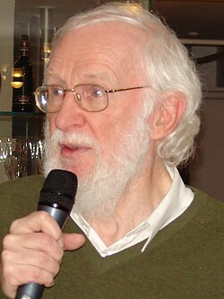

Peter Naur | |
|---|---|
 Naur in 2008 | |
| Born | 25 October 1928 Frederiksberg, Denmark |
| Died | 3 January 2016 (aged 87) Herlev, Denmark |
| Education | University of Copenhagen (BS, MS, PhD) |
| Known for | ALGOL Backus–Naur form |
| Spouse | Christiane Floyd |
| Awards | Computer Pioneer Award (1986) Turing Award (2005) |
| Scientific career | |
| Fields | Computer science, informatics |
| Institutions | Regnecentralen Niels Bohr Institute Technical University of Denmark University of Copenhagen |
Peter Naur (25 October 1928 – 3 January 2016)[1] was a Danish computer science pioneer and 2005 Turing Award winner. He is best remembered as a contributor, with John Backus, to the Backus–Naur form (BNF) notation used in describing the syntax for most programming languages. He also contributed to creating the language ALGOL 60.
Naur began his career as an astronomer for which he received his Doctor of Philosophy (Ph.D.) degree in 1957, but his encounter with computers led to a change of profession. From 1959 to 1969, he was employed at Regnecentralen, the Danish computing company, while at the same time giving lectures at the Niels Bohr Institute and the Technical University of Denmark. From 1969 to 1998, Naur was a professor of computer science at University of Copenhagen.
He was a member of the International Federation for Information Processing (IFIP) IFIP Working Group 2.1 on Algorithmic Languages and Calculi,[2] which specified, supports, and maintains the languages ALGOL 60 and ALGOL 68.[3] Between the years 1960 and 1993 he was a member of the editorial board for BIT Numerical Mathematics, a journal focused on numerical analysis.[4]
Naur's main areas of inquiry were design, structure, and performance of computer programs and algorithms. He also pioneered in software engineering and software architecture. In his book Computing: A Human Activity (1992), which is a collection of his contributions to computer science, he rejected the formalist school of programming that views programming as a branch of mathematics. He did not like being associated with the Backus–Naur form (attributed to him by Donald Knuth) and said that he would prefer it to be called the Backus normal form.
Naur was married to computer scientist Christiane Floyd.
Naur disliked the term computer science and suggested it be called datalogy or data science. The former term has been adopted in Denmark and Sweden as datalogi, while the latter term is now used for data analysis, including statistics and databases.
Since the middle 1960s, computer science has been practiced in Denmark under Peter Naur's term datalogy, the science of data processes. Starting at Regnecentralen and the University of Copenhagen, the Copenhagen Tradition of Computer Science has developed its own special characteristics by means of a close connection with applications and other fields of knowledge. The tradition is not least visible in the area of education. Comprehensive project activity is an integral part of the curriculum, thus presenting theory as an aspect of realistic solutions known primarily through actual experience.[5] Peter Naur early recognized the particular educational challenges presented by computer science. His innovations have shown their quality and vitality also at other universities. There is a close connection between computer science training as it has been formed at Copenhagen University, and the view of computer science which characterized Peter Naur's research.[6]
In later years, he was quite outspoken of the pursuit of science as a whole: Naur can possibly be identified with the empiricist school, that tells that one shall not seek deeper connections between things that manifest themselves in the world, but keep to the observable facts. He has attacked both certain strands of philosophy and psychology from this viewpoint. He was also developing a theory of human thinking which he called "Synapse-State Theory of Mental Life".[7]
Naur won the 2005 Association for Computing Machinery (ACM) A.M. Turing Award for his work on defining the programming language ALGOL 60.[8] In particular, his role as editor of the influential Report on the Algorithmic Language ALGOL 60 with its pioneering use of BNF was recognized. Naur is the only Dane to have won the Turing Award.
Naur died on 3 January 2016 after a short illness.[9] His former home in Gentofte was subsequently owned by the sociologist Claire Maxwell.
Numbers refer to the bibliography published by E. Sveinsdottir and E. Frøkjær. Naur published a large number of articles and chapters on astronomy, computer science, issues in society, classical music, psychology, and education.
{kind=link}